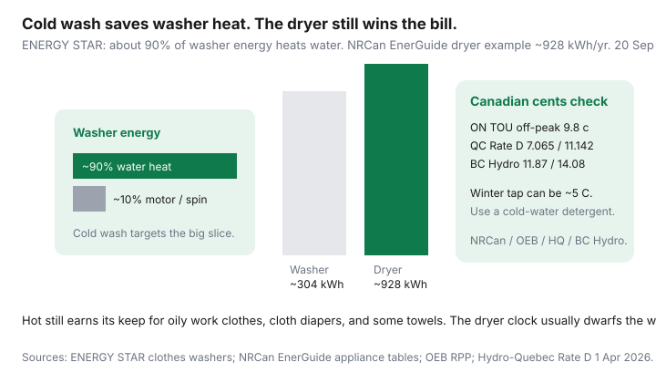

Utilities · Canada
Cold-Water Laundry in Canada: Real Energy Savings and When Hot Still Makes Sense
Households hear “wash cold” and treat it as a finished energy plan. In a Canadian winter the tap is closer to 5°C than to a California laundry-room brochure, the detergent may not dissolve, and the electric dryer in the next closet still uses two or three times the washer’s kilowatt-hours. Cold water is a real lever. It is not the whole laundry bill.
This is a utility-rate translation, not a stain-removal course. If the January hydro shock is heat, start with the winter overview. If you share a basement machine, the apartment tactics below matter more than a $1,200 front-loader you do not own.
Disclosure: LED kits are an offer type that can sit beside a laundry-room upgrade. Saving Optimizer may earn a commission if we later add partner links. We do not currently claim detergent, appliance, or utility partnerships. This is education — not a product endorsement.
Key takeaways
- About 90% of washer energy is water heating (ENERGY STAR). Cold wash targets that slice; the motor and spin are the leftover 10%.
- NRCan still says wash cold, and ENERGY STAR washers use about 25% less energy and 33% less water than a standard model. Pair that with a high-spin so the dryer works less.
- Canadian winter tap water can sit near 5°C. Use a detergent labelled for cold water. Hot still earns its keep for oily work clothes, cloth diapers, and some towels.
- A standard dryer on NRCan’s EnerGuide tables is on the order of 928 kWh/year versus roughly 304 kWh for an ENERGY STAR washer. Dryer habits usually dwarf washer savings.
- Translate kWh at your tariff: Ontario TOU off-peak 9.8 ¢ (from 1 Nov 2025), Hydro-Québec Rate D 7.065 / 11.142 ¢ (1 Apr 2026), BC Hydro 11.87 / 14.08 ¢. Delivery still sits on the bill.
How much of washer energy is water heating
ENERGY STAR’s clothes-washer pages still put the split in one sentence: water heating consumes about 90% of the energy it takes to operate a clothes washer. Switching hot to warm can cut that energy roughly in half; cold cuts it further. The drum motor and the high-speed spin are the rest. That is why a “high-efficiency” washer that still defaults to 40°C leaves most of the save on the table.
NRCan’s ENERGY STAR washer page (used 20 Sep 2026) adds the machine-level claim: a certified washer uses about 25% less energy and 33% less water than a standard model, and a faster spin pulls more water so the dryer runs less. The EnerGuide appliance tables NRCan still circulates show an ENERGY STAR washer on the order of 304 kWh/year versus a standard top-loader near 319 kWh in a later vintage — and a standard dryer near 928 kWh/year. The dryer column is the one that should scare you, not a 15 kWh washer delta.

If the tank is electric, every hot fill is a hydro kWh. If the tank is gas, the washer “save” shows up on the Enbridge or FortisBC bill, not on the LDC line. Either way, you are buying fewer litres of heated water — not a magic cycle named Eco.
Detergent performance in cold Canadian tap water
NRCan’s water-heater guidance notes winter inlet water as cold as 5°C. That is the same water that hits the cold valve in January. Powder that needs 30°C to dissolve will smear. Liquid or packets labelled for cold water, a short pre-dissolve in a mug if the tap is ice, and skipping the “extra rinse you always add” are the practical Canadian moves.
- Dose for the soil, not “one more cap because it is cold.” Extra soap becomes extra rinse water — and extra dryer time if you over-suds.
- Modern enzymes in cold-water detergents are built for 15°C loads. At 5°C they still beat a 1980s powder. They do not beat a grease-shop hoodie on the first try.
- A warm wash with a cold rinse is the compromise NRCan still lists when cold will not do the job. You paid for half the heat, not all of it.
Towels, diapers, and oily work clothes exceptions
Cold is the default. Hot is a tool.
| Load | Default | Why |
|---|---|---|
| Everyday cottons, synthetics, gym kit | Cold | Soil is light; heat is mostly vanity |
| Cloth diapers, illness bedding | Hot or the sanitise cycle the maker specifies | This is hygiene, not energy theatre |
| Oily work clothes, kitchen rags | Warm or hot, then a cold rinse | Grease does not care about your ¢/kWh lecture |
| Musty towels after a damp week | Hot once, then cold going forward | One reset beats a permanent hot default |
| Wool, elastane, “wash cold” labels | Cold, gentle | The garment dies before the bill notices |
Dryer habits that dwarf washer savings
Read the companion on dryer energy and heat-pump dryers. The short version: a clogged vent, a half-spin, and a timed bake will erase a year of cold washes. High-spin or extra spin on the washer, clean lint every load, and a moisture sensor beat a new “steam” cycle. Line-dry what a Canadian January will actually accept — socks on a rack, not a frozen duvet on the balcony that then needs a 90-minute recovery.
Apartment shared-laundry tactics
You do not own the machine. You still own the ¢.
- Pick the newest washer in the bank if there is a choice — faster spin, fewer rewashes.
- Pay for a full load. Two half loads double the heat and the dryer cards.
- Cold unless the exception table says otherwise. Do not “upgrade” to hot because the card already has $20 on it.
- If the dryer is a timed dinosaur, pull clothes at “just dry” and hang the last 10%. You paid for the card, not for baking elastane.
- If hydro is in the rent, your save is card cash and wear — still real, just not on an LDC graph. If you are on a submeter, the kWh is yours.
Estimating annual $ savings from your utility rate
Do not use a U.S. 16 ¢ national average. Use the commodity you actually pay, then remember delivery.
| Tariff (commodity) | Rate used | 200 kWh/year of avoided water heat |
|---|---|---|
| Ontario TOU off-peak (laundry at night) | 9.8 ¢ from 1 Nov 2025 | About $20 of energy — more after delivery, less after 23.5% OER on the eligible lines |
| Ontario TOU on-peak (dinner wash) | 20.3 ¢ | About $41 of energy — the clock is the lever, not a hotter wash |
| Hydro-Québec Rate D second tier | 11.142 ¢ from 1 Apr 2026 | About $22 — first 40 kWh/day is 7.065 ¢ if you are still in the block |
| BC Hydro Step 2 | 14.08 ¢ | About $28 — Step 1 11.87 ¢ if you are under the daily threshold |
| Alberta energy (RoLR-ish) | ~12 ¢ energy to 31 Dec 2026 | About $24 of energy — delivery and rider are extra; shop the UCA tool for the contract |
Worksheet: count hot or warm loads per week × litres the washer heats × the temperature rise × your fuel. Or simpler: if you move 150–250 washer-heat kWh/year to cold, multiply by your ¢ and stop there. Do not advertise a $400 laundry miracle. The dryer and the furnace still own January.
For the Ontario clock itself use the OEB calculator. For Rate D tier math keep the Hydro-Québec guide open.
Sources & date stamps
- ENERGY STAR, Clothes washers — about 90% of washer energy is water heating; hot-to-warm can cut that energy roughly in half (used 20 Sep 2026).
- NRCan, ENERGY STAR clothes washers — about 25% less energy and 33% less water; high spin reduces dryer energy.
- NRCan, Choosing and Using Appliances with EnerGuide — example annual kWh for washers and a standard dryer (~304 / ~928 in the circulated table).
- NRCan Water Heater Guide — winter inlet water as cold as 5°C.
- OEB RPP TOU 9.8 / 15.7 / 20.3 ¢ from 1 Nov 2025; Hydro-Québec Rate D 7.065 / 11.142 ¢ from 1 Apr 2026; BC Hydro 11.87 / 14.08 ¢ (same stamps as other Utilities guides on this hub).
Frequently asked questions
How much of my washer bill is hot water?
ENERGY STAR still attributes about 90% of washer operating energy to water heating. Cold wash attacks that slice. The motor and spin are the rest.
Does cold water clean in a Canadian January?
Yes for everyday soil if you use a detergent labelled for cold water. Winter tap can be near 5°C. Hot still belongs on oily work clothes, cloth diapers, and a periodic towel reset.
Will this save more than switching the dryer?
Usually no. NRCan EnerGuide examples put a standard dryer near 928 kWh/year versus a few hundred for the washer. High-spin, vent cleaning, and fewer timed bakes usually beat a colder wash alone.
What about a gas water heater?
The washer save shows up as fewer cubic metres, not fewer hydro kWh. It is still real. Translate at your gas supply ¢, not at an electricity table.
I use a basement card laundry. Does any of this apply?
Yes: full loads, cold unless you have a hygiene or grease exception, and do not over-dry on a timed machine. You may not own the kWh graph, but you own the cards.